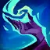
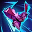

아리 (Ahri)
마법사/암살자 / 난이도: 중
스킬
-

패시브 정기 흡수미니언이나 몬스터를 처치하면 아리가 정기 조각을 얻습니다. 조각을 9개 모으면 전부 소모해 체력을 회복합니다. 아리가 적 챔피언에게 피해를 입힌 후 3초 안에 해당 챔피언 처치에 관여하면 그 정기를 삼켜 체력을 회복합니다.
-
Q 현혹의 구슬
아리가 구슬을 던진 후 다시 받습니다. 던질 때는 마법 피해를 입히며 돌아올 때는 고정 피해를 입힙니다.
-
W 여우불
아리가 근처 적에게 날아가는 여우불 세 개를 방출하여 마법 피해를 입힙니다. 첫 번째 여우불이 적중한 후에는 마법 피해량이 40%로 감소합니다. 또한 이동 속도가 40% 증가했다가 2초에 걸쳐 원래대로 돌아옵니다.
-
E 매혹
아리가 키스를 날려 첫 번째로 맞는 적을 일정 시간 매혹매혹하고 마법 피해를 입힙니다.
-

R 혼령 질주아리가 민첩하게 질주하며 챔피언을 우선으로 근처 적에게 혼령의 정기 3개를 쏘아내 정기 하나당 마법 피해를 입힙니다. 혼령 질주가 활성화되어 있는 동안 정기 흡수로 챔피언의 정기를 흡수하면 스킬 재사용의 지속 시간을 최대 10초 늘리고 혼령 질주 시전을 추가로 1회 부여합니다. (최대 3회까지 중첩)
배경 스토리 요약
영혼 세계의 마법과 선천적으로 연결된 아리는 먹잇감의 감정을 조종하고 정수를 집어삼킬 수 있는 여우 모습의 바스타야로, 영혼을 먹어 치울 때마다 그 안에 담긴 지혜와 기억의 편린을 받아들인다. 강력하면서도 불안정한 포식자였던 아리는 이제 조상들의 흔적을 찾아 세상을 여행하며 지금껏 훔친 기억을 버리고 스스로 자신만의 추억을 쌓으려 한다.